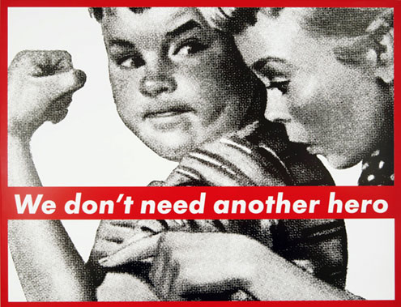
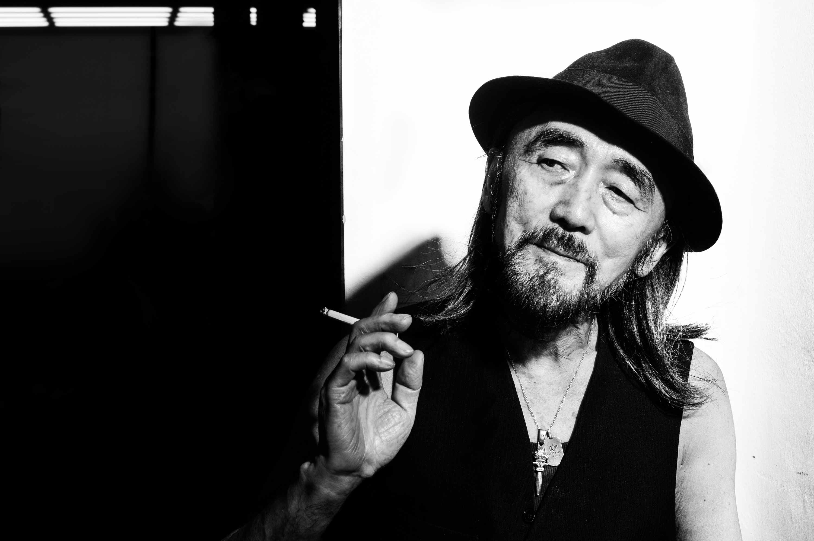
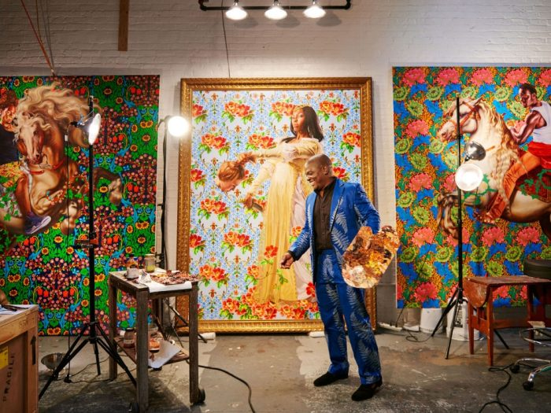
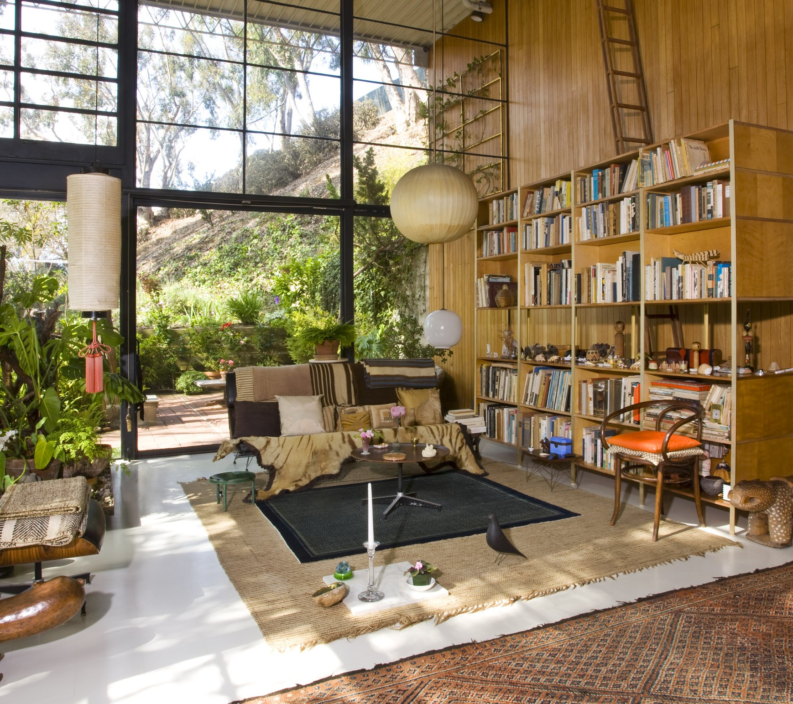

Barbara Kruger a Hero for Heroes.

Barbara Kruger is best known for her silkscreen
prints where she placed a direct and concise
caption across the surface of a found photograph.
Her prints from the 1980s cleverly encapsulated the
era of "Reaganomics" with tongue-in-cheek satire;
especially in a work like (Untitled) I shop therefore
I am (1987), ironically adopted by the mall generation
as their mantra. As Kruger's career progressed, her work
expanded to include site-specific installations as well as
video and audio works, all the while maintaining a firm
basis in social, cultural, and political critique.
Since the 1990s, she has also returned to magazine design,
incorporating her confrontational phrases and images into
a wholly different realm from the art world. Associated with
postmodern Feminist art as well as Conceptual art, Kruger
combines tactics like appropriation with her characteristic
wit and direct commentary in order to communicate with the
viewer and encourage the interrogation of contemporary
circumstances.
Y3 = Master of Design

Yohji Yamamoto was born in 1943 in fashionable Yokohama
in the district of Tokyo. His mother was a dressmaker
and primarily responsible for opening the door to fashion
for her son. In 1966, he graduated with a degree in law
from Keio University in Tokyo but immediately enrolled
at the Bunka Fashion College to study fashion design.
He traveled to Paris on a student scholarship during his
time as a student there and when he graduated in 1969,
went to work for his mother as a dressmaker. Yamamoto’s
subsequent skill as a designer is connected to a great
extent to his first-hand understanding of dressmaking –
today, he is considered one of the master tailors of the
fashion world.
Naturalistic Calling

Los Angeles native and New York based visual artist,
Kehinde Wiley has firmly situated himself within art
history’s portrait painting tradition. As a contemporary
descendent of a long line of portraitists, including
Reynolds, Gainsborough, Titian, Ingres, among others,
Wiley, engages the signs and visual rhetoric of the h
eroic, powerful, majestic and the sublime in his r
epresentation of urban, black and brown men found
throughout the world. By applying the visual vocabulary
and conventions of glorification, history, wealth and
prestige to the subject matter drawn from the urban
fabric, the subjects and stylistic references for his
paintings are juxtaposed inversions of each other,
forcing ambiguity and provocative perplexity to pervade
his imagery. Wiley’s larger than life figures disturb
and interrupt tropes of portrait painting, often
blurring the boundaries between traditional and
contemporary modes of representation and the critical
portrayal of masculinity and physicality as it pertains
to the view of black and brown young men.
A Pair Made for Design

Charles Eames (1907–78) and Ray Eames (1912–88) gave
shape to America's twentieth century. Their lives and
work represented the nation's defining movements: the
West Coast's coming-of-age, the economy's shift from
making goods to producing information, and the global
expansion of American culture. The Eameses embraced the
era's visionary concept of modern design as an agent of
social change, elevating it to a national agenda. Their
evolution from furniture designers to cultural ambassadors
demonstrated their boundless talents and the overlap of
their interests with those of their country. In a rare era
of shared objectives, the Eameses partnered with the federal
government and the country's top businesses to lead the charge
to modernize postwar America. Born in St. Louis, Missouri, Charles Eames grew up in
America's industrial heartland. As a young man he worked
for engineers and manufacturers, anticipating his lifelong
interest in mechanics and the complex working of things.
Ray Kaiser, born in Sacramento, California, demonstrated her
fascination with the abstract qualities of ordinary objects
early on. She spent her formative years in the orbit of New
York's modern art movements and participated in the first
wave of American-born abstract artists.